HABANERO BABY BOOK
The documented early days of the habanero seedlings I'm growing in my window. A plant parenting adventure.
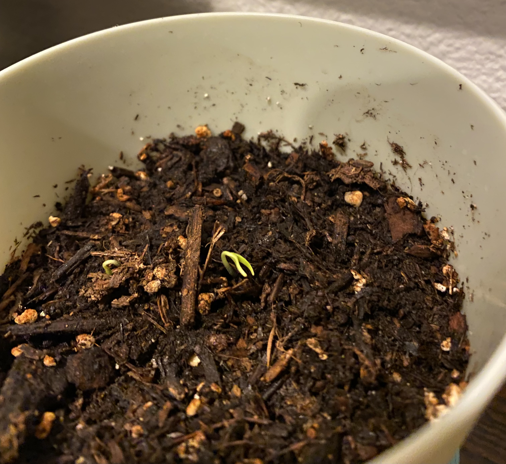
February 24, 2022 - First Sprouts Emerge
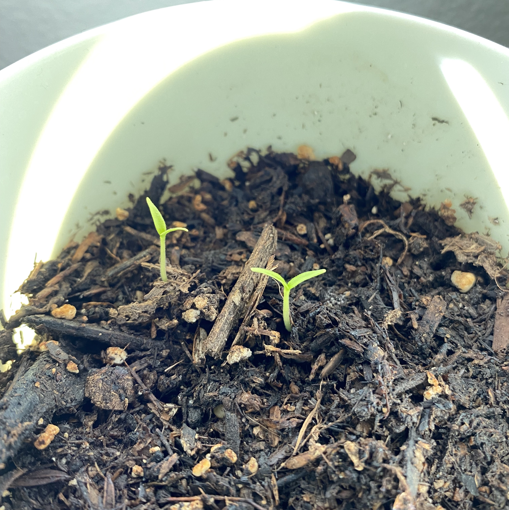
February 26, 2022 - Little Sweet Babies
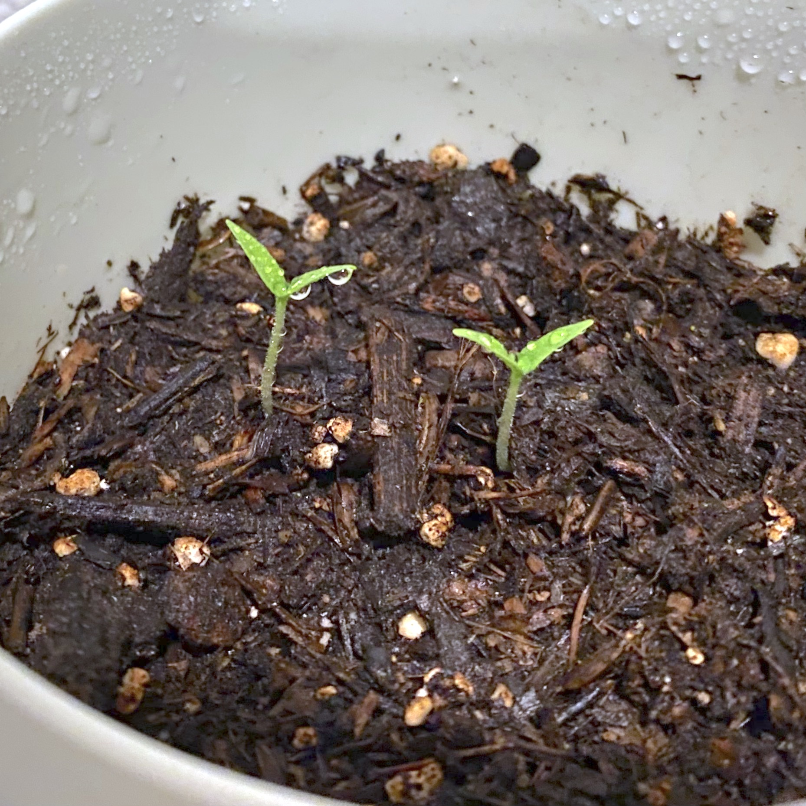
February 27, 2022 - Taller Babies
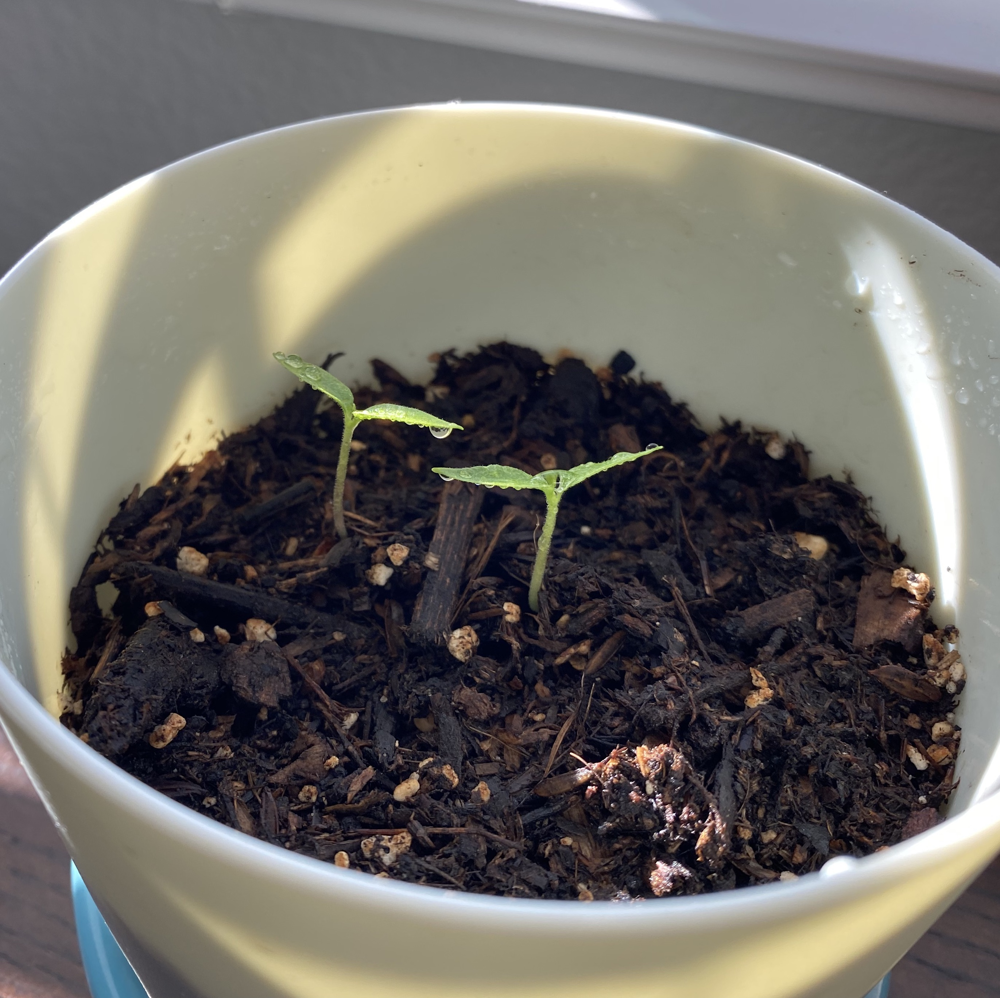
March 6, 2022 - Healthy Green Babies
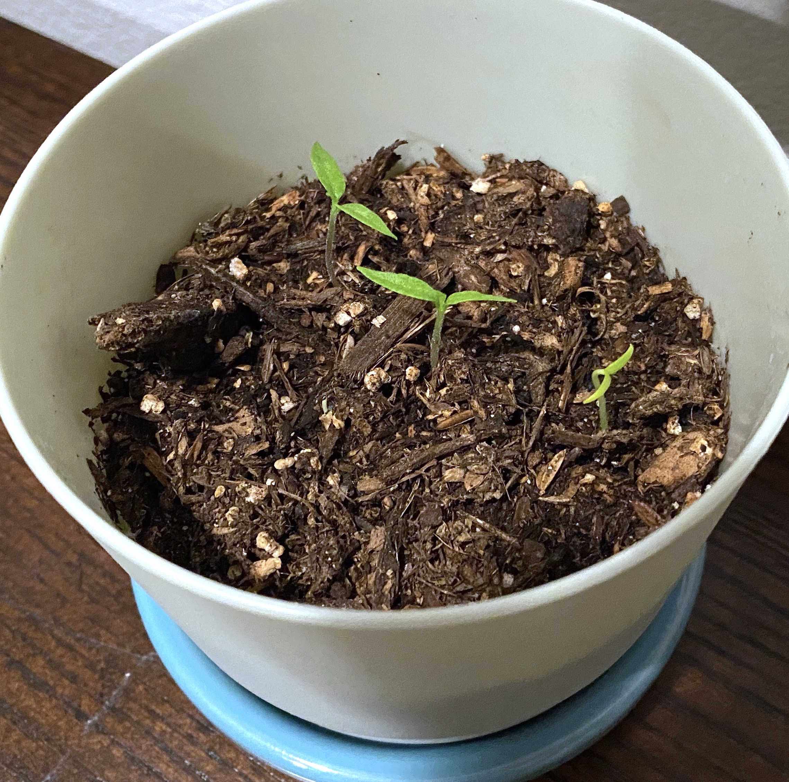
March 8, 2022 - Third Sprout
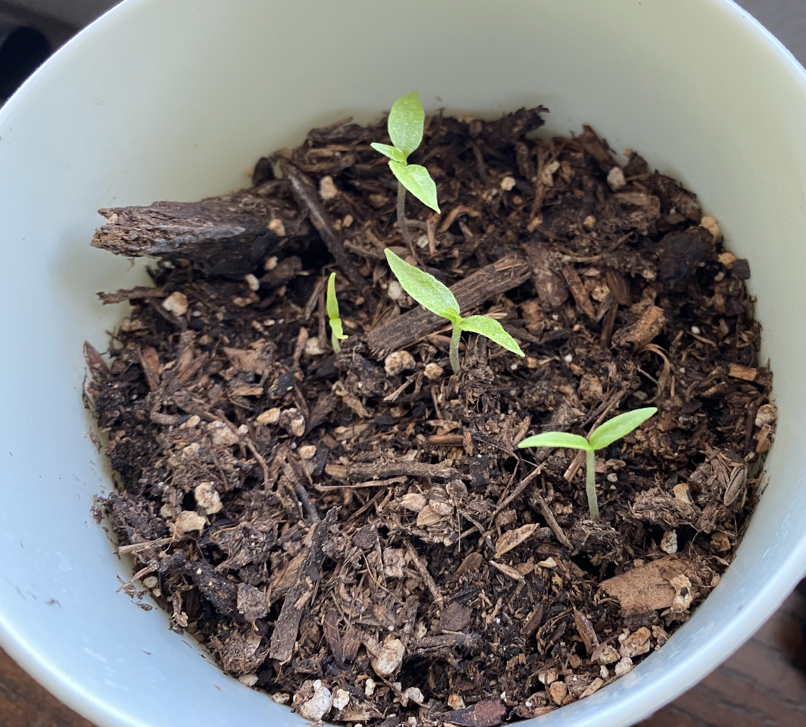
March 10, 2022 - Fourth Sprout
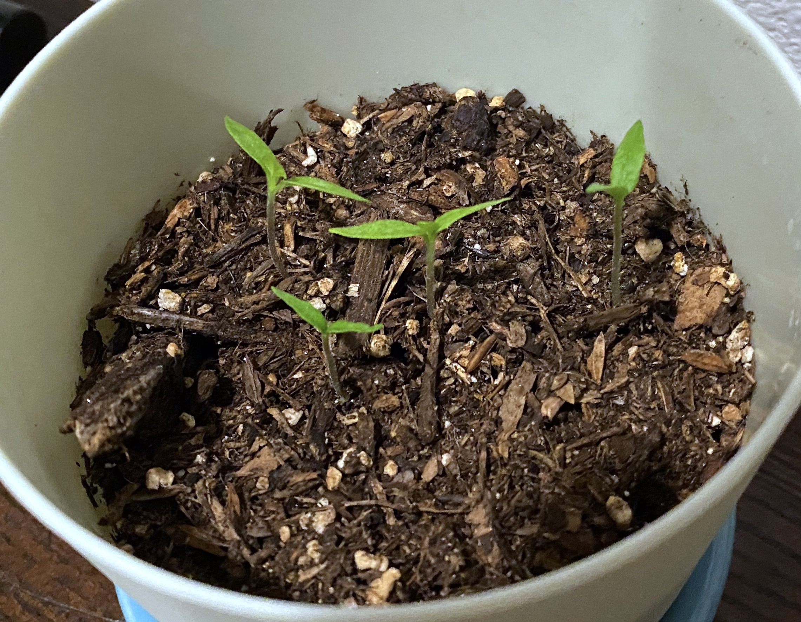
March 13, 2022 - Gang's All Here
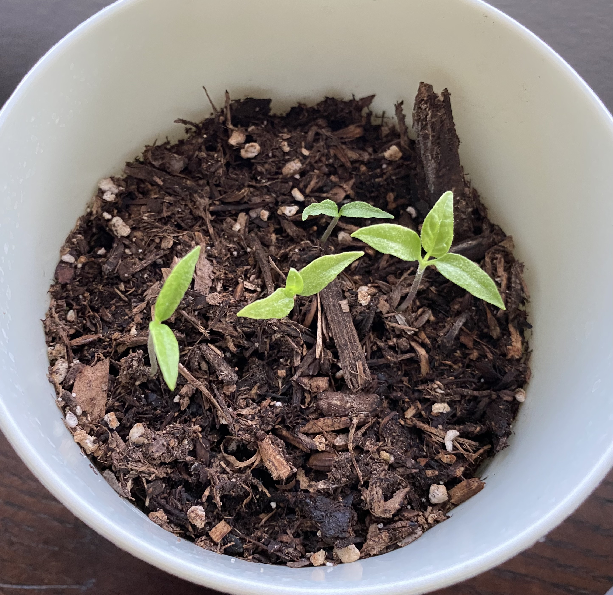
March 15, 2022 - Rate of Growth Pronounced
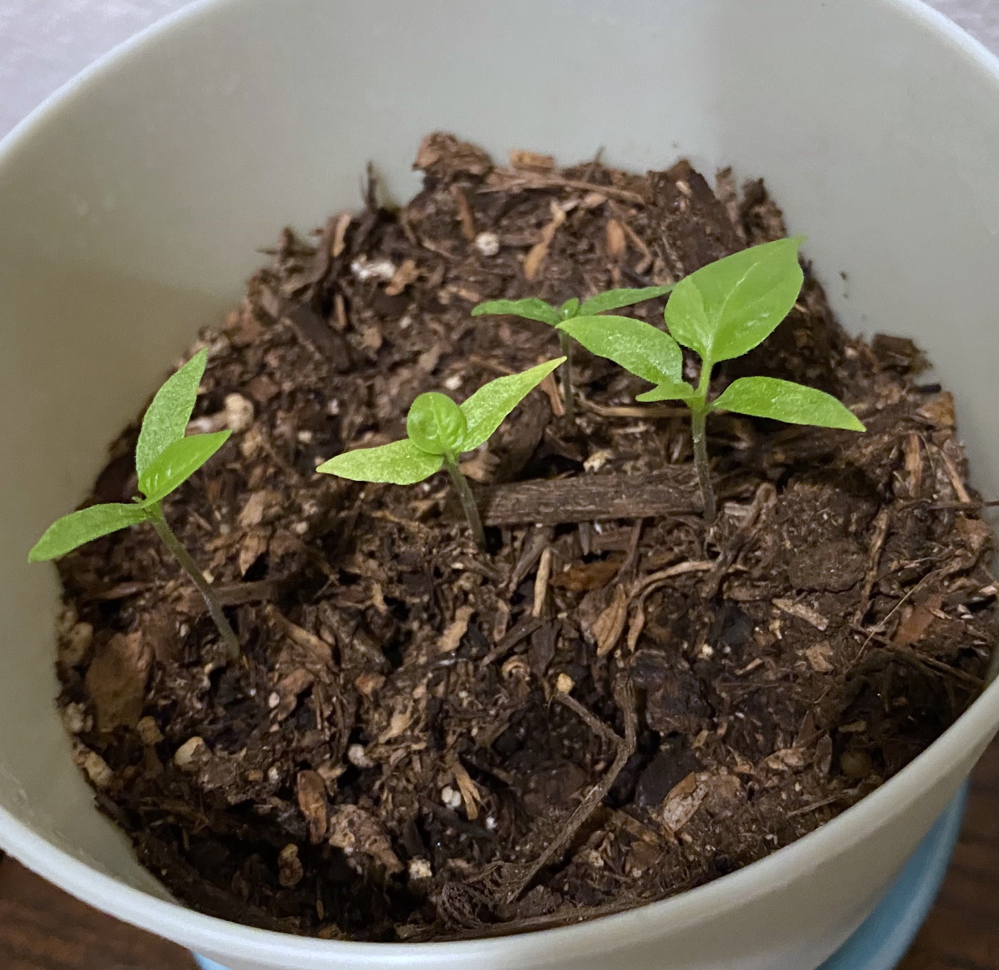
March 22, 2022 - Second Sets of Leaves
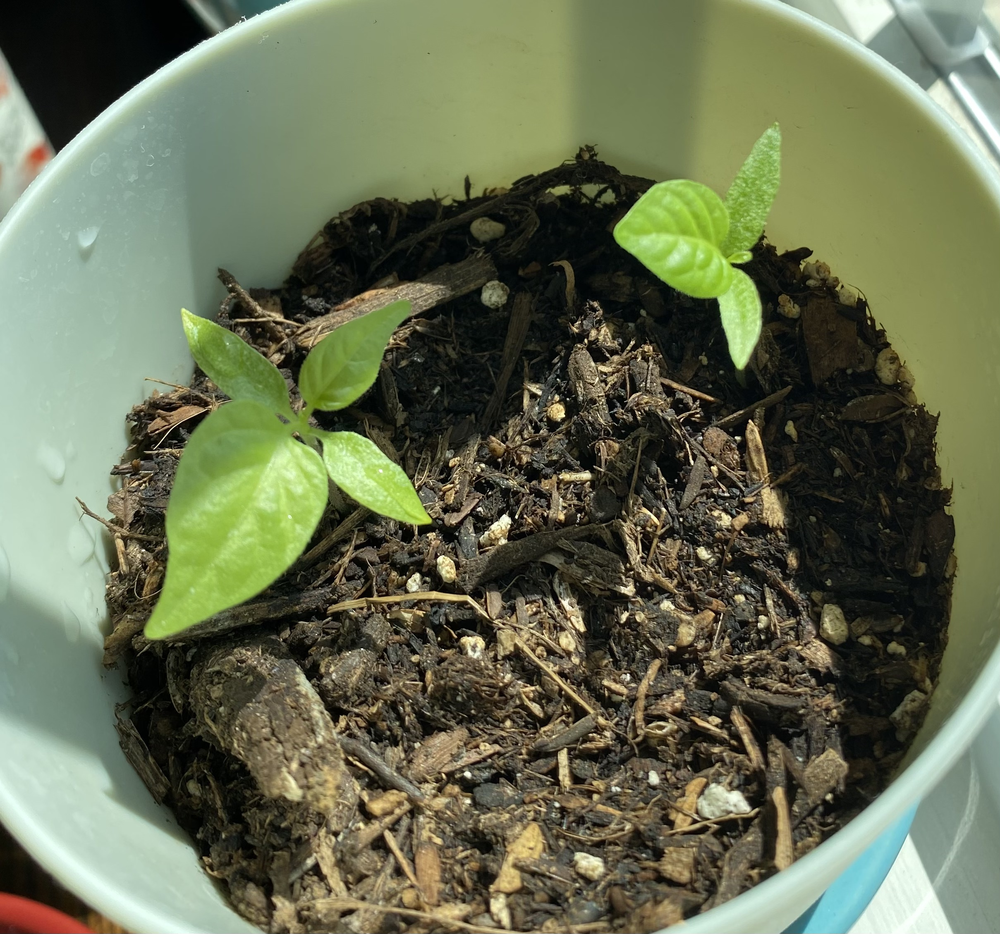
March 26, 2022 - Big Leaves, Runts Culled
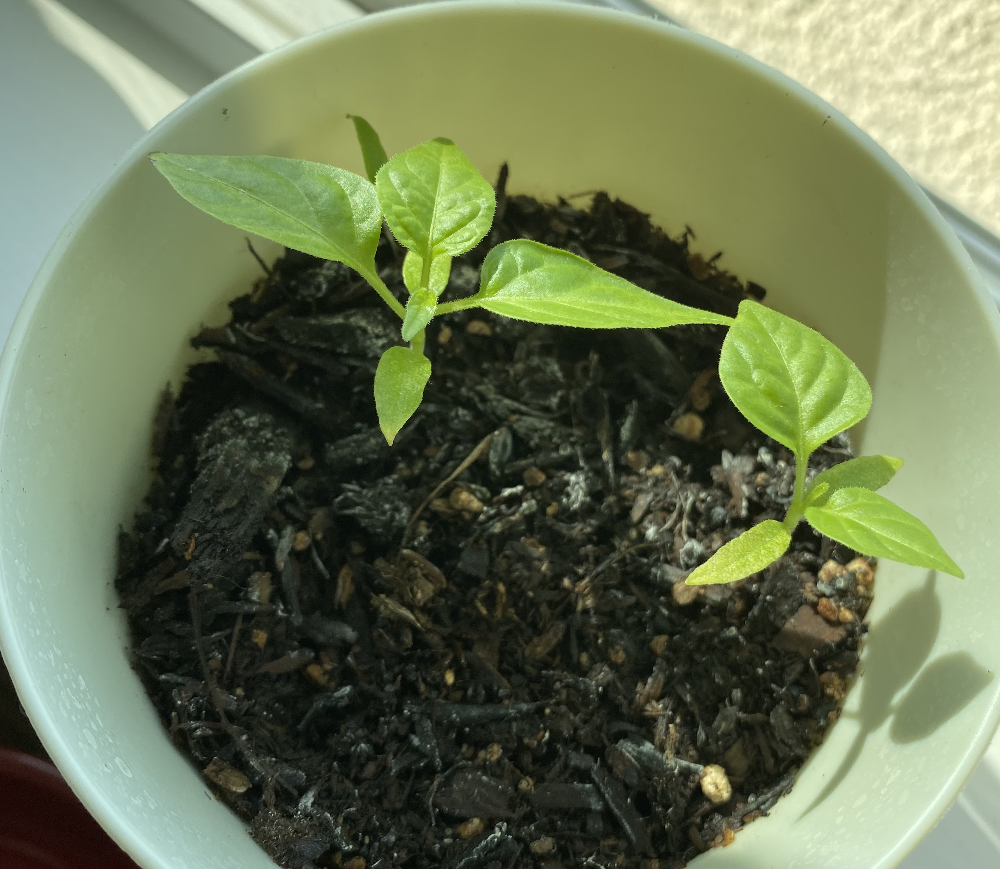
April 9, 2022 - Additional Leaf Sets
Check back later for more updates!